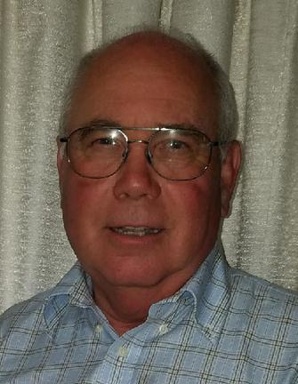

COMPASSION MINISTRIES INC.
Established in 1993
CALL FOR INFORMATION - (541) 928-6382
COMPASSION MINISTRIES BOARD OF DIRECTORS
Larry Crawford, our current Chairman of the Board of Directors, was raised in rural Western Oregon.
He attended Eddyville School all twelve years. He recognized his sinful heart condition and that
Jesus Christ died on the cross for his sin at age six. He was influenced and nurtured in his Christian
growth by the local church and Sunday School teachers, Pastors, and coaches. He played football,
basketball, and baseball in high school. He loves the outdoors and has spent hours hunting, fishing,
and working on cars. He went to college at OTT in Klamath Falls, Portland Community College and
Multnomah’s MDiv program for 2 years.
Larry married his high school sweetheart, Leona, in 1972. They
have two children, Carri and Jachen. Both are married, and he is blessed to have six grandchildren,
ages 2 to 18 years in age. He served as a youth director in a small church, taught classes and
served on an Elder Board at Montavilla Baptist in Portland. Larry pastored Peoria Bible Church for 22
years. He worked as a general contractor of residential homes for 35 years, and is now retired from
contracting, instead utilizing his skills in serving people and the church. He enjoys serving people
and using his gifts to grow God’s kingdom. He also finds building projects and restoration of
old houses and cars rewarding. Larry doesn’t see retirement addressed in Scripture. He and his wife will
keep on serving people until God calls them home.
Diane Gray and her husband Randy live in Lebanon, Oregon. She is a teacher, musician, scientist,
contractor, and mother of seven-- ages seven to twenty-one. She attended Oregon State University, earning a
B.S. in Microbiology with minors in Music and Chemistry, and an M.S. in Microbiology
/Molecular Biology. After
twelve years in biotech research and development, she switched careers to guide her children's home education.
As an avid learner, she homeschools her own children, tutors high school seniors, and she is currently working
on a Master of Arts in Classical Education through Southeastern University.
In addition to homeschooling, she
works as an Area Representative with Classical Conversations, an international homeschool tutoring program,
supporting the programs, directors, and leaders in the Greater Portland Area in Oregon. She also serves as
a music leader for her congregation in Salem. Diane has learned the value and importance of compassion,
especially for those dealing with mental illness, through working with family, church, and school ministry.
She serves on the board of Compassion Ministries as Treasurer because she wants to support the efforts Compassion
Ministries provides to those in need. Diane's life mission is to point people to God through Jesus Christ, and
she loves to assist others in living lives filled with gratitude, praise, and excellence.
Cheryl Rinkin • Bachelor’s Degree: California State University, Los Angeles • General Secondary Teaching
Credential • Director of award-winning performing groups at the high school and college level invited to perform in
Russia, Hawaii, throughout California, and at NFL games • Assistant School Administrator: Cheryl was a former
teacher and school administrator who worked with many students and families who had special needs. Cheryl was invited
to help with the annual Harvest of Hope Auction for Compassion Ministries beginning in 2008.
Each year she was able to
see more clearly how God used Judy and Mike Rinkin give hope and support to many families and individuals who were affected
by mental illness. Her passion began to grow deeper as she became more involved with designing the website for Compassion
Ministries where she learned more about mental illness. While preparing the weekly articles from Mike
and posting the images on the Website, Facebook, Instagram, and Twitter, Cheryl is excited to see the way the ministry is gaining
recognition. She is currently serving on the Board of Directors and is inspired to do whatever she can to help
with this much-needed ministry. Cheryl is honored to have this opportunity to be able to contribute her time and talents to serve
God in this way.
Dan Rinkin • U.S. Army Veteran • Bachelor’s Degree: California State University, Long Beach • Dan held Senior Human
Resource Management positions with corporations in Automobile, Aerospace, Transportation, Information Technology, and Manufacturing
Industries. He was a former Human Resources Executive and worked with many employees who had family members, or they themselves had
to deal with mental illness issues.
When Judy and Mike Rinkin asked him to help with the Silent Auction fundraiser for Compassion
Ministries in 2008, having already seen a tremendous need for people to be educated about mental health, Dan was thankful to be able
to be a part of such a wonderful ministry. He continued to be involved each year as a volunteer, and as he saw and learned more about the
ministry, his passion for the cause grew. Dan was inspired to do whatever he could to help with this worthwhile cause. Currently he is
serving on the Board of Directors for Compassion Ministries and honored to have this opportunity to be able to contribute his talents
to serve God in this way.
Judy Rinkin is the parent of an adult with mental health disorders. She was the Executive Director and co-founder
of the Oregon Family Support Network, May 1991 - October 1998, which supported families who have children and young adults with
mental health disorders and challenges. While with this organization, she developed and taught curriculum about mental health
and stigma issues. She has presented at local, state and national conferences on mental health issues for children, adolescents
and family members. She is a graduate form Oregon State University with a degree in Home Economics Education, minoring in Early
Childhood Education.
Ms. Rinkin was the Family Partnership Specialist for the State of Oregon, Addictions & Mental Health
Division in Salem, Oregon, for 14 years. She currently mentors young women at Oak Creek Youth Institution, Albany, OR. She has
two grown sons, two grandchildren and a great-granddaughter. She volunteers in many women’s and homeless activities at her
church. Ms. Rinkin enjoys gardening, stamping, card making, and spending time at the coast with family and friends. For the past
several years, she has chaired the Oral and Silent Auction for Compassion Ministries. She and her husband, Mike, of 54 years reside
in Albany, Oregon, and are avid Oregon State University Beaver fans!
Mike Rinkin was born in Wilkes-Barre, Pennsylvania, the oldest of two boys. The family moved to California in 1948. Mike and Judy (Lynn) married in 1963. They have two grown sons (Brad and Eric), two grandchildren, and one great-granddaughter. He became a Christian in 1963 at the Billy Graham Crusade at the Coliseum, Los Angeles, California. Mike graduated from Fuller Theological Seminary with a Master of Divinity, 1979. His first pastorate was in Yakima, Washington as Minister of Evangelism. In 1983, Mike became the Pastor of the Presbyterian Church in Shedd, Oregon. When his youngest son Eric received his diagnosis of bipolar, Mike realized that the church needed education on the facts about mental illness and the challenges. Mike’s life path changed. During the late 1980s, he became the President of the National Alliance on Mental Illness (NAMI) of Benton and Linn counties and Regional Director of the Western Regional Presbyterian Mental Illness Network. In 1993, Mike felt a calling by God into his present ministry as founder and Executive Director of Compassion Ministries. Mike along with his wife, Judy, are avid Oregon State University fans. They have had season tickets for several years for football and women’s basketball. They also enjoy other OSU activities.